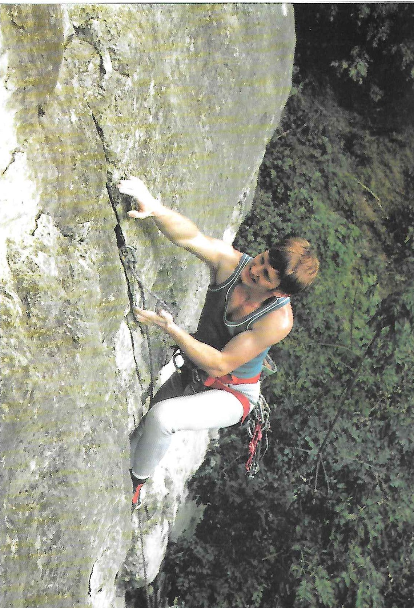

Route Major
The summer of 1986 was a good one in the Alps with a long period of settled weather early in the season. I was camping at Pierre d'Orthaz opposite the infamous Snell's Field. Unlike Snell's, Pierre d'Orthaz has the advantage of being "legal" and thus one's gear is not likely to be transported to the Gendarmerie whilst one is away climbing a Route.
I had been in Chamonix for a few weeks so had already climbed several Routes and was quite fit and well acclimatised. I had always wanted to climb a Route on the Brenva Face of Mont Blanc and the meteo was predicting at least two days of good weather, so this seemed like a good time to try. The Brenva Face is one of the largest and most impressive in the Alps. Situated on the Italian side of Mont Blanc, framed between the Brenva Ridge and Eckpfeiler Buttress, it over a mile long and the Face itself is 5000 feet high. Since it faces directly into the morning sun, an early start is essential to get above the seracs which dominate the lower part of the Face and to escape the avalanches which sweep this part of the Face during the day.
The Face was originally explored by T. Graham Brown with various partners in the 1930's. During this period he climbed the three Routes for which the Face is famous: Route Major , Sentinelle Rouge and The Pear . All three routes are impressive, tackling the biggest face on the mountain and leading directly to the summit. There are no great technical difficulties but all the routes are exceptionally long, are at high altitude and there is considerable objective danger from avalanches. I particularly wanted to climb Route Major which takes the great snow ice buttress defining the left hand side of the Great Couloir in the centre of the Face.
I had arranged to tackle the climb with Gareth, a Scot, who had climbed the Brenva Ridge a couple of weeks earlier with some mutual friends. They had in fact been planning to climb Route Major but after first getting lost trying to find the hut and then failing to traverse far enough across the bottom of the Face a common mistake they had ended up on the Brenva Ridge . Near the top of the Route one of the party who was not acclimatised had then got into difficulties and it had taken them a very long time to climb the final slopes leading to the summit of Mont Blanc. Just below the summit they had also come across two other Brits who had climbed the Cecchinel Nomine route on the Eckpfeiler Buttress. One of them was in a bad way, had collapsed from exhaustion in the snow, and had to be helicoptered off but that is another story.
We decided that the best way to tackle the Route was to travel light and climb quickly, moving together, in order to minimise our exposure to objective dangers. We took only one nine millimetre rope, two rock pegs and two ice screws but we had plenty of food, most of which we ate at the hut before starting the climb. I had no spare clothes and the only item in my rucksack during the climb was a cagoule. The Route would be a three day trip from Chamonix: an afternoon to reach the hut and an overnight ascent climbing the Face while it was frozen into immobility , followed by a bivouac in the Vallot hut just below the summit of Mont Blanc. The next day we would descend via the ordinary route to Chamonix.
Just to gain access to the Brenva Face from Chamonix is quite an expedition in itself. The first stage is to take a telepherique to the summit of the Aiguille du Midi easy on the legs but hard on the wallet and to descend into the Vallee Blanche which is traversed to one of two huts, the Ghiglione or the Fourche. Finding the huts is a problem in itself, since both are situated on a ridge overlooking the Brenva Face and are very difficult to locate from below. I had been to both previously but I never knew which hut I was going to end up at until I actually arrived there. Following tracks on the glacier, we climbed up a steep icy gully to the crest of the ridge and finally arrived on the balcony of the hut about six in the evening it was the Fourche.
The hut itself is very small, sleeping only eight to ten people, but the view is outstanding since from the balcony the whole of the Brenva Face is clearly visible. Leaving the hut would be particularly exciting, an abseil from the balcony onto the glacier below being necessary. It is definitely not a place for sleepwalkers. From the hut our line of approach would cross the upper part of the Brenva Glacier, climb over Col Moore and then traverse the bottom of the face until below the large rock tower, the Sentinelle Rouge . Climbing up slopes of snow and ice to the Sentinelle Rouge we would then traverse the Great Couloir to reach the foot of the great rock ice buttress which forms the substance of the route. All this section is very exposed to avalanches and consequently must be completed at night. The buttress provides the most difficult climbing but is safe from objective danger and leads to the summit ridge between Mont Blanc de Courmayeur and Mont Blanc.
The hut was full of Italians who were intending to climb the Brenva Ridge with a guide and also two other Brits who were planning to climb the Frontier Ridge on Mont Maudit. We managed to squeeze into a corner near to the door next to a couple of inscrutable Japanese and began to cook our food. This annoyed the Italians who complained that the stove made too much noise and was keeping them awake. Ignoring the protests, we carried on cooking and filled ourselves with spaghetti and baked beans. Just after we had finished and the Italians had returned to their slumbers, a couple of Scots lads arrived and began to cook their food, once again arousing the Italians' ire. We had a brief conversation with the two Japanese and discovered that they also planned to climb Route Major the next morning.
It proved impossible to rest in the crowded hut, so we abandoned our plan of staying there until 2.00 am and left at 11.00 pm instead. Someone had kindly left a rope hanging from the balcony of the hut but it was only after abseiling to the end of it that we discovered that it stopped thirty metres short of the glacier. Gareth was not impressed, but luckily it was too dark to visualise the consequences of a slip. Some quite tricky climbing down steep ice and chossy snow lead down to a final leap over the bergschrund onto the glacier.
Roping up, we started to plod across the glacier towards Col Moore. A nearly full moon illuminated our progress in the icy cold of the night and we congratulated ourselves on our good fortune. However, a few minutes later, and as if to spite us, the moon disappeared behind the summit of the Blanc and everything suddenly went dark. Switching on our head torches we carried on over the Col and began to traverse below the Face across the avalanche prone gullies. Huge blocks of ice littered the glacier, evidence of the avalanches that fall here during the day. At this point Gareth's head torch went out and we had to stop and take it to bits not easy with freezing hands and in the dark but could find nothing wrong. We re assembled it and as if by magic it started to work again. Looking back towards the hut we could see the two head torches of the Japanese as they began their descent onto the glacier.
Gareth was determined not to repeat his previous mistake and we continued for what seemed like miles across the bottom of the Face until, above us, we could see what appeared to be the Red Tower . Crossing the bergschrund in order to get established on the Face proved tricky, as the upper lip was covered in unconsolidated icing sugar. Burying my axes in the snow up to my armpits I managed to mantleshelf and did a belly flop onto the slope above.
Shortly beyond the bergschrund the icing sugar changed to hard ice and we were funnelled into a wide gully. Rounding a corner we found ourselves below some small seracs, but avoided these by climbing a small ice ramp which split them. The gully then became wider and we could see at an indeterminate distance higher up what we assumed to be the Sentinelle Rouge . The climbing was quite tiring because of the hard and polished surface of the ice. Small chips of ice slithered down the slope towards us and below we could see vast piles of avalanche debris at the bottom of the Face.
After climbing some distance up the slope it became obvious that what we had thought, in our ignorance, to be rocks sheltering us from possible avalanches were in fact more seracs, this time much bigger and highly dangerous. The little slivers of falling ice now assumed a greater significance as we anticipated the really big fall which would sweep us from the slope. We were now clearly lost but had no alternative but to continue and we soon reached the seracs. Luckily we found an easy line, climbing them by one long but quite steep pitch.
Thinking that the danger was now past, our illusion was shattered as above us we could see yet a third and even larger row of seracs. After climbing over some smaller formations we arrived at the base of the main barrier. It was my lead and I was distinctly worried as I began to work my way up the steep ice. The climbing was very steep and the ice hard and dinner plating. I had no way of knowing if I would be able to reach less steep ground and a belay. Fortunately, I reached the top of the serac with about twenty feet of spare rope. Seconding this pitch was just as nerve racking for Gareth as the belay was a single ice screw and so the rope offered only an illusion of security.
Once we had surmounted the last serac we could see a rocky ridge up to our left and decided to make for this, thinking that we would be safe on its crest. The slope seemed to go on for ever as, acutely conscious of the need for speed, we climbed towards the rocks. Eventually we reached the foot of the ridge and found an easy gully leading to its crest. Safe at last, we paused for a good look around. Suddenly everything clicked into place as I could see the Brenva Ridge far below us. We had climbed the couloir and seracs to the right of Route Major and were now above all the difficulties and out of danger.
Far below us we could see the head torches belonging to the parties beginning their ascent of the Brenva Ridge . It was two o'clock in the morning and we had managed to climb 4000 feet of difficult ground: far from being slow as we had thought, we had in fact been climbing extremely fast!
Gareth was very annoyed at having missed his chosen Route twice in succession and we sat down to discuss what to do next. I was equally annoyed about having got lost, but was even more relieved that we were finally off the Face. However, it was still quite a way to the summit up a long and tedious snow slope which we both knew would be hard going at this altitude. Disillusioned at having failed to find the correct line, we had the alternative of descending the Brenva Ridge back to the hut, enabling us to return to the fleshpots of Chamonix that afternoon. This route would at least be sheltered from avalanches if the sun hit the Face before we had completed the descent.
The decision to go down was duly made and we lost height rapidly. Close to the bottom of the ridge I suggested descending a gully on one flank to save time instead of going all the way to the end of the ridge. However, at the foot of the gully we could not discover any way over the bergschrund and we were forced to traverse along the base of the Brenva Ridge to a point where the bergschrund narrowed. This lead us directly beneath the seracs overlooking the Gussfeldt Couloir! After jumping the bergschrund, we ran down the slope below and out of the fall line to safety.
Plodding back across the glacier we were treated to a magnificent sunrise over Mont Maudit but to complete our catalogue of errors we managed to end up at the Ghiglione hut. Shortly after our arrival there was a tremendous noise and on rushing outside we saw a massive avalanche from The Pear seracs sweeping the route we had been climbing. We retired to bed, suitably chastened, for a well earned sleep. Later in the day, as we left the hut to go back down to Chamonix, I had a good look at the Brenva Face and saw that whilst we had been sleeping there had been another avalanche, this time from the seracs above the Gussfeldt Couloir below which we had traversed on our descent.
The walk back up the Vallee Blanche proved extremely tiring and we only just caught the last telepherique down to Chamonix. When we got back to Pierre d'Orthaz the lads told us that two people had been killed on Route Major the previous night and they had thought it must have been us. Luckily we had got back before they had sold our gear!
The next day we wandered into the Guides Bureau and looked at the Definitive Routes Book. It seemed that no one had previously climbed our line so it would appear that we had done a new route by mistake, although I doubt if anyone will wish to repeat it. We asked about the two people who had been killed. A Guide told us that two Japanese had been overwhelmed near the great Buttress by an avalanche. This had happened at just about the time we should have been climbing the Buttress had we left the hut when we had originally planned.

Figure 1: Chris Wright at Water cum Jolley